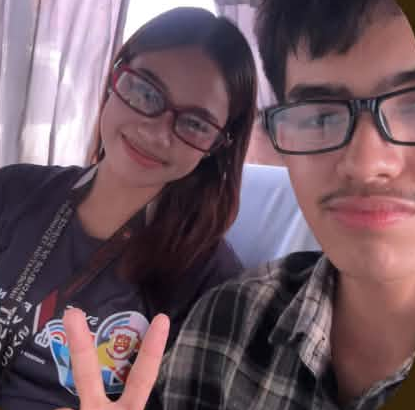
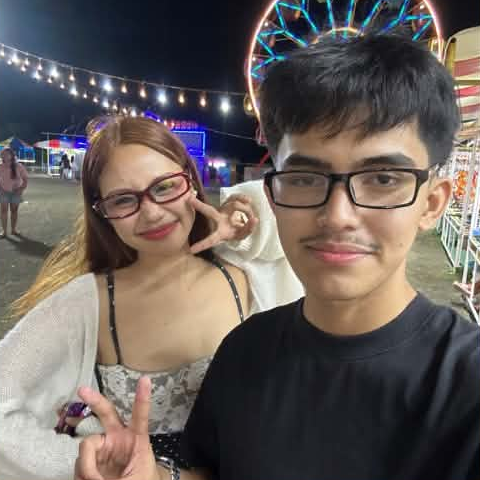

Hello bae, I’m writing this to you ‘cause I don’t think I can tell it to you in person. First of all, I want to thank you so much for always showing up for me. Kapag inaaya kita, palagi mo akong sinasamahan and palagi mo akong pinaghahandaan. Nag-aayos ka ng matagal, nagme-makeup, at dahil doon mas nafi-feel ko na important ako sa’yo. You always make my rest day amazing. I hope every gala natin nag-eenjoy ka, then mas lalo pa nating makilala ang isa’t isa, hehe.
Ayon bae, I just want to say na sobrang na-appreciate kita. Sorry kung hindi ko man masabi in person, huhu. I can assure you, bebe, that I will never stop showing efforts na hindi lang ako sa una magaling. Sabi nga nila, actions speak louder than words, di ba? I promise that I’ll never stop trying to become a better person for you, or to be a better man.
I’ll do my best to learn you. What I mean by this is mas makabisado pa kita. Medyo marami na akong nalalaman na fav mo eh, HAHAHA, pero lets say na marami pa akong gustong malaman about you and to love every version of yourself, my baby Yuki. Tsaka dapat kada date natin, I hope you know na okay lang maubos laman ng wallet ko. Ang importante naman is nabili ko yung gusto mo, especially mga bagay na nagpapasaya sa’yo, and memories din nating dalawa yon.
God knows how much I love you po, and thank you so much again for the chance na ligawan ka. Hindi ko sasayangin ito. Ikaw lang po, bae, I can promise you that. I’m sorry kung medyo mabilis ko man masabi ito, hindi rin ako nagbibitaw ng word na hindi ako sure, but there’s one thing that I’m sure of right now: I can feel that I’m in love with you already. I LOVE YOU, bae.
More dates to come sa atin, and marami pa tayong pupuntahan na lugar na hindi pa natin napupuntahan. Mwaaa